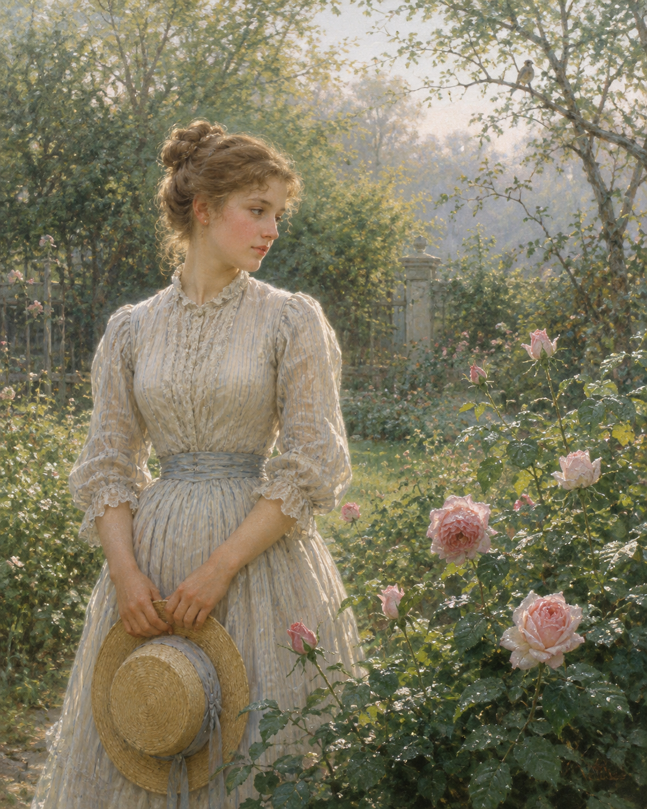

Das macht, es hat die Nachtigall
Das macht, …（这是因为……）是日常德语高频而教材少见的口语因果句式：用一个独立的"Das macht"引出原因，相当于"原因在于……"。es hat die Nachtigall gesungen 中的 es 是形式主语，真正主语是 die Nachtigall。
夜莺
《Gedichte》（Erstes Buch）· 民歌体抒情诗
诗意现实主义 · Poetischer Realismus
约1855/1856年作；收入《Gedichte》第一卷（Erstes Buch）

图片由 AI 生成
Das macht, es hat die Nachtigall
Das macht, …（这是因为……）是日常德语高频而教材少见的口语因果句式：用一个独立的"Das macht"引出原因，相当于"原因在于……"。es hat die Nachtigall gesungen 中的 es 是形式主语，真正主语是 die Nachtigall。
Da sind in Hall und Widerhall / Die Rosen aufgesprungen.
der Hall + Widerhall（回声、回响）为同源叠用。aufgesprungen（绽开）是 aufspringen 的过去分词。夜莺的歌声使玫瑰绽开——这是波斯—浪漫派"夜莺与玫瑰"母题的德语化（见背景）。
Sie war doch sonst ein wildes Kind;
★关键异文：作者原诗确定作"ein wildes Kind"（一个野孩子）。部分网络版本（如 deutschelyrik.de）作"ein wildes Blut"（一个野性子的血性姑娘），那是 Alban Berg 1907/08 艺术歌曲《Sieben frühe Lieder》改词后流传开来的读法，并非原诗。本站从作者原诗 wildes Kind（详见校对记录）。
Und weiß nicht, was beginnen.
was beginnen（该怎么办、该做什么）——beginnen（开始）在此为不及物用法，意为"着手、行动"。少女因爱情（夜莺/玫瑰的暗示）而失措：不知道该做什么。这是全诗情感的中点。
| Infinitiv | Präsens 3. Sg. |
Präteritum | Perfekt | Partizip II | Konjunktiv II | Hilfsverb |
|---|---|---|---|---|---|---|
| singen | singt | sang | hat gesungen | gesungen | sänge | haben |
| ↳ 强变化（i–a–u）；诗中 die Nachtigall … gesungen（第2行，过去分词）。 | ||||||
| aufspringen | springt auf | sprang auf | ist aufgesprungen | aufgesprungen | spränge auf | sein |
| ↳ 强变化（i–a–u），可分；诗中 Die Rosen aufgesprungen（第5行，状态/结果，过去分词）。 | ||||||
| dulden | duldet | duldete | hat geduldet | geduldet | duldete | haben |
| ↳ 弱变化；诗中 duldet still der Sonne Glut（第9行，默默忍受烈日）。名词 die Geduld（耐心）、ungeduldig（不耐烦）。 | ||||||
第1节 Nachtigall／gesungen／Schall／Widerhall／aufgesprungen ＝ abaab；第3节逐字重复第1节
Das macht, es hat die Nachtigall Die ganze Nacht gesungen;
第一节与第三节字字相同（共5行复现）
特奥多尔·施托姆（1817—1888）是德语诗意现实主义（Poetischer Realismus）的代表，以中篇小说《茵梦湖》闻名。他的抒情诗数量不多，但多首（如《夜莺》《城市》《十月之歌》）已成为德语艺术歌曲（Lied）的常用歌词。
《夜莺》约作于1855/56年，收入其《诗集》第一卷。诗的主题——"夜莺的歌声使玫瑰绽开"——源自波斯与东方文学中"夜莺（bulbul）与玫瑰"的古老母题：夜莺彻夜啼鸣，玫瑰因它的歌（或因它的血）而开放。这一母题经浪漫派（如 Rückert、Geibel 的东方化译诗）进入德语抒情诗，施托姆把它写得极简、极日常——没有东方的华丽，只有一个因爱情而失措的少女。
本诗是德语艺术歌曲的常用文本，曾被沃尔夫（Hugo Wolf）等多位作曲家谱曲。需特别注意的是：阿尔班·贝尔格（Alban Berg）1907/08 年的《七首早期歌曲》（Sieben frühe Lieder）把第6行的"wildes Kind"改作"wildes Blut"，这一歌曲版本的读法后来流传到部分网络诗库（如 deutschelyrik.de），但原诗确定作"wildes Kind"（详见校对记录）。
中文译文为本站学习译文（AI 辅助），采用直译。说明：(1) "Das macht, …"译"这是因为……"，保留其口语因果语气；(2) 第三节按原诗原样重复第一节（5行复现），译文照办；(3) "wildes Kind"译"野孩子"——这是作者原诗确定读法，不采"wildes Blut"的歌曲版本（详见校对记录）。本诗与本站《纺纱女的夜歌》（编号21）、《死亡，那是清凉的夜》（编号14）构成"夜莺三首"，建议对照阅读。
【三源核对】德文正文读法以 textlog.de、Projekt Gutenberg-DE、LiederNet 三个直接抓取的独立来源交叉确认（均作 wildes Kind），一级来源 Zeno.org《施托姆四卷全集》第1卷第115页标注页码著录（本次主机拒绝连接）。3 节、行数 5/5/5（共15行）、首末两节原样重复——一致。
【关键异文：wildes Kind vs wildes Blut】作者原诗确定作"ein wildes Kind"（一个野孩子）。textlog、Gutenberg-DE、LiederNet（其 apparatus 经一手核对）一致。"ein wildes Blut"（一个野性子的血性姑娘）出自阿尔班·贝尔格1907/08年《七首早期歌曲》的谱曲改词，后流传到 deutschelyrik.de 等部分网络诗库——这是歌曲版本的读法，非原诗。本站从原诗 wildes Kind。这一条是本页最重要的反误读点。
【待进一步核实】(1) 具体创作/首刊年份：各来源或作1855或作1856，本站写"约1855/1856"；(2) Zeno 主机本次拒绝连接，其 S.115 页码据 Zeno 元数据，待恢复后补抓快照复核；(3) 该诗不在施托姆1851年《Sommergeschichten und Lieder》中，而在《Gedichte》第一卷，确切首刊载体待核。
【公版】施托姆1888年卒，公版起始年 = 1888 + 71 = 1959。
本诗现满足规则 A（≥3 来源）、B（≥3 独立运营方：zeno / textlog / gutenberg / liedernet）、D（含一级来源 Zeno 全集本）。